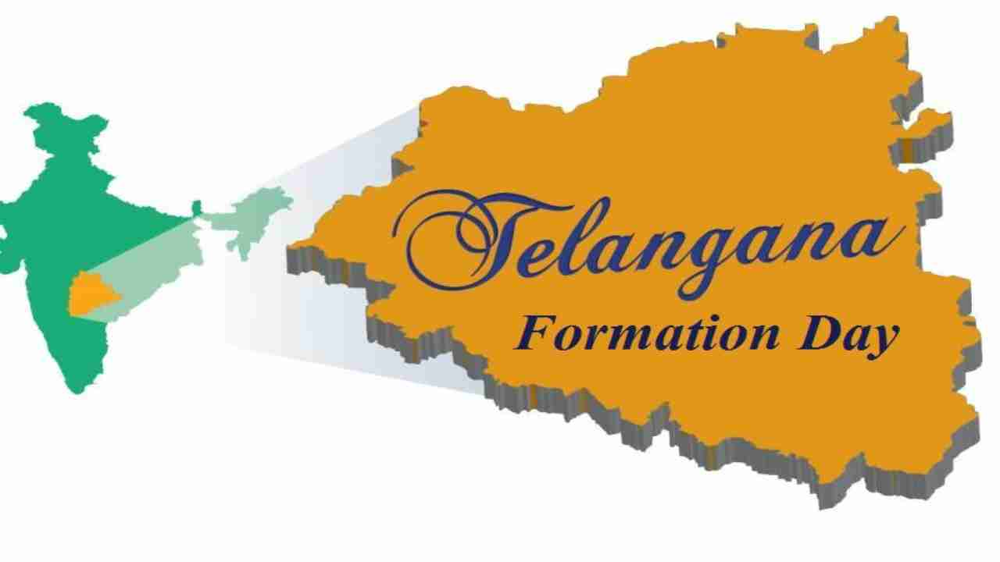

The history of Telangana, located in the grand region, includes its governance by many rulers. It was ruled by the Satavahana Dynasty (230 BCE to 220 CE), the Kakatiya Dynasty (1083–1323), the Musunuri Nayaks (1326–1356) the Delhi Sultanate, the Bahmani Sultanate (1347–1512), Golconda Sultanate (1512–1687) and Asaf Jahi dynasty (1724-1950). In 1724, Nizam-ul-Mulk defeated Mubariz Khan and conquered Hyderabad. His successors ruled the princely state of Hyderabad, as Nizams of Hyderabad. The Nizams established first railways, postal and telegraph networks, and the first modern universities in Telangana. After Indian independence, the Nizam did not sign the instrument of accession to India. The Indian army invaded and annexed Hyderabad State in 1948. In 2014, Telangana became the 29th state of India, consisting of the thirty-one districts, with Hyderabad as its capital. The city of Hyderabad will continue to serve as the joint capital for Andhra Pradesh and the successor state of Telangana for a period of ten years.
The Telangana movement refers to a movement for the creation of a new state, Telangana, from the pre-existing state of Andhra Pradesh in India. The new state corresponds to the Telugu-speaking portions of the erstwhile princely state of Hyderabad. After several years of protest and agitation, the central government, under the United Progressive Alliance, decided to bifurcate the existing Andhra Pradesh state and on 7 February 2014, the Union Cabinet unilaterally cleared the bill for the creation of Telangana. Lasting for almost a decade, this has been one of the most longlasting movements in South India.On 18 February 2014, the Lok Sabha passed the bill with a voice vote. Subsequently, the bill was passed by the Rajya Sabha two days later, on 20 February. As per the bill, Hyderabad would be the capital of Telangana, while the city would also remain the capital of residual state of Andhra Pradesh for no more than ten years. On 2 June 2014, Telangana was created.
The Telangana movement refers to a movement for the creation of a new state, Telangana, from the pre-existing state of Andhra Pradesh in India. The new state corresponds to the Telugu-speaking portions of the erstwhile princely state of Hyderabad. After several years of protest and agitation, the central government, under the United Progressive Alliance, decided to bifurcate the existing Andhra Pradesh state and on 7 February 2014, the Union Cabinet unilaterally cleared the bill for the creation of Telangana. Lasting for almost a decade, this has been one of the most longlasting movements in South India.On 18 February 2014, the Lok Sabha passed the bill with a voice vote. Subsequently, the bill was passed by the Rajya Sabha two days later, on 20 February.As per the bill, Hyderabad would be the capital of Telangana, while the city would also remain the capital of residual state of Andhra Pradesh for no more than ten years. On 2 June 2014, Telangana was created.
Non-implementation of Gentlemen’s Agreement and continued discrimination to Telangana region in government jobs, education and public spending resulted in the 1969 statehood agitation. In January 1969, students intensified the protests for a separate state. On 19 January, all party accord was reached to ensure the proper implementation of Telangana safeguards. Accord's main points were 1) All non-Telangana employees holding posts reserved for Telangana locals will be transferred immediately. 2) Telangana surpluses will be used for Telangana development. 3) Appeal to Telangana students to call off agitation. But the protests further intensified, as more and more students and employees joined the statehood movement. Police firing on protesters led to the death of about 369 youngsters during this phase of the agitation. Then Prime Minister Indira Gandhi called for a high-level meeting to discuss the statehood issue. After several days of talks with leaders of both regions, on 12 April 1969, the Prime Minister developed an Eight Point Plan. Sri M. Chenna Reddy, founded the Telangana Praja Samithi (TPS) political party in 1969 to spearhead the statehood movement. + Mrs. Indira Gandhi had called snap parliamentary elections in March 1971. In these parliamentary elections, Telangana Praja Samithi won 10 out the 14 Parliament seats in Telangana. However, Indira Gandhi’s Congress (R) Party scored a landslide victory on a platform of progressive policies such as poverty elimination (Garibi Hatao). She was reluctant to accept the Telangana statehood demand at that juncture. Sri M Chenna Reddy then merged TPS in Congress (R) party, after formulating a Six-Point Formula to safeguard Telangana’s interests. The statehood movement continued until 1973, but subsided later.